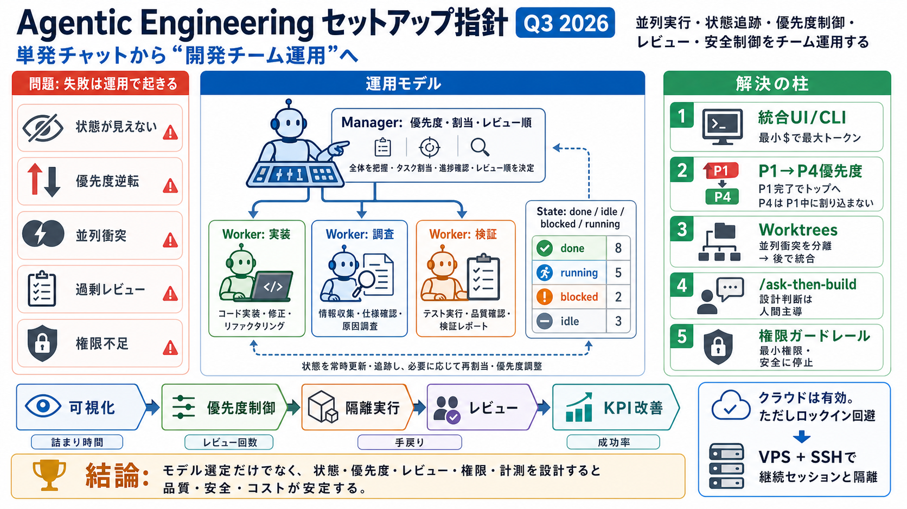

Cover
02 / 16
Agentic Engineering / エージェント開発運用
Q3 2026
「単発チャット」ではなく、並列実行・状態追跡・優先度制御・レビュー・安全制御まで含めて“開発チームとして運用する”ためのセットアップ指針です。
Problem
03 / 16
失敗は運用で起きる
運用設計が勝敗
エージェントは多数・長時間・並列で動く前提だと、モデル選定だけでは品質・安全・コストが崩れます。
Symptoms
詰まり（未実行/待機不明）、優先度逆転、レビュー順序の破綻
Root cause
状態非可視化／権限設計不足／並列衝突の未対策／過剰な再帰レビュー
Metaphor
04 / 16
AIは“人員”になる
ワーカー化
エージェントを「タスク担当（worker）」と見なし、マネージャが状態と優先度を調整する運用へ進みます（マネージャ→ワーカー化）。
Manager
優先度・割当・レビュー順の統括
Worker
実装/調査/検証を分担（並列）
System
done/idle/blocked/running の状態追跡
Architecture
05 / 16
統合UI/統合CLI
最小コスト最大トークン
単一GUIで複数モデル/サブスクを扱える統合インターフェースが中心戦略です。
Why
エージェントは消費トークンが膨らむため、コスト構造がパフォーマンスそのものになる
Goal
「最小$で最大トークン」を運用ルールに落とす（モデル/課金を横断）
Process
06 / 16
状態が見えない事故
状態追跡は必須
done/idle/blocked/running のような状態が見えることを ESSENTIAL に置きます。
Done
成果物あり（次工程へ）
Idle
待機中（割当待ち/未起動）
Blocked
依存/権限/外部待ち（詰まり検知）
Enumeration
07 / 16
優先度は“整合性”
P1→P4制御
優先度付き切替は品質を左右します。並列ほど「いつ何に反応するか」がブレると依存関係やレビュー順序が崩れます。
Rule
P1完了でトップへ戻す
Rule
P4応答はP1実行中に行わない
Effect
速度だけでなく整合性（レビュー順/依存）が保たれる
Distinction
08 / 16
クラウドは正解。ただし条件
ロックイン回避
クラウドエージェントは普及が進む一方、秘密情報・料金体系・セッション・設定に拘束される“生態系ロックイン”が問題になります。
Risk
移行コスト増（設定/データ/セッション/料金へ依存）
Principle
80/20のクラウド利点を自前運用で低コスト化する
Architecture
09 / 16
自前サーバで“継続性”
Herdr on VPS
VPS上で Herdr 等を動かし、SSHでアクセスすることで持続セッションや隔離を安価に得る方針です。
Setup
VPS（仮想専用）
Access
SSH（環境の持ち運び）
Benefit
隔離・ネット/電源の安定を享受（低ロックイン）
Evidence
10 / 16
並列衝突の回避
Worktrees
並列実行が増えるほど“同時に触る”問題が出るため、worktreesで衝突回避を設計します。
Problem
同一ワークスペースへの同時変更でレビュー/テストが破綻
Control
worktreesで分離→後で統合（整合性と追跡性を維持）
Distinction
11 / 16
レビュー設計が要
範囲と順序
レビューは「重要点だけを抽出」する設計が必要です。一方で再帰レビュー（recursive reviews）は架空の誤りを生み得るため危険です。
Good
/total-review：重要点の要約
Caution
recursive reviews：過剰要求→ノイズ増
Principle
設計判断（アーキ）は人間主導
Process
12 / 16
“作る前に聞く”
/ask-then-build
実装はAIでも、アーキテクチャの意思決定は人が保持する方針です（/ask-then-build）。
Step i
/ask
Step ii
/then-build
エージェントがそれらしく誤る領域（誤った設計仮説）は、意思決定の境界で人が止めます。
Enumeration
13 / 16
安全は権限で作る
ガードレール/権限
ガードレールと権限設計で「意図せず壊す」リスクを下げます（例：read-only DBロール等）。
Guardrail
実行範囲の制限（どこまで触るか）
Permission
最小権限（読み取り専用など）
Failure mode
安全に失敗させる（止める・ロールバック）
Process
14 / 16
KPIで運用を測る
生産性計測
成功を再現するには、設計と運用を“測定可能”にして改善サイクルへ入れます（生産性計測）。
Measure
詰まり時間、レビュー回数、手戻り、実行成功率
Iterate
状態・優先度・レビュー範囲・権限を調整して再テスト
References
15 / 16
参照メモ（抜粋）
参考
本デッキは、ユーザー提示の要約/観点（Q3 2026 セットアップ指針）から要点を圧縮して構成しています。
Core
Agentic Engineering：並列実行・状態追跡・優先度・レビュー/安全/権限・worktrees・生産性計測
Examples
統合UI/統合CLI、Herdr、Corral、/total-review、recursive reviews、/ask-then-build、read-only DBロール
Tradeoff
クラウドのロックイン回避（VPS運用で80/20を安価に）、サブスク/課金は前提条件が頻繁に変わる
REFERENCES
16 / 16
References
No references found